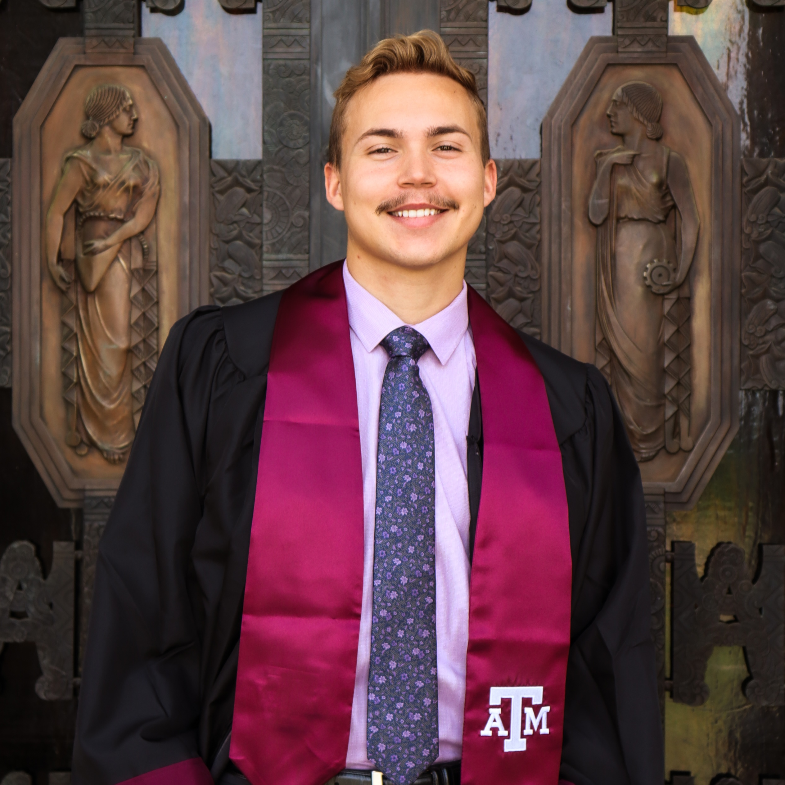

Samuel Holleman
OTS Candidate
Hi, I'm Samuel Holleman.
I created this personal portfolio to set myself apart as a candidate for USAF Officer Training School.
This is more than a virtual folder—it’s a reflection of my commitment to leadership, service, and excellence.
Navigate through it using the left and right chevrons at the bottom corners, and you’ll see the qualities that define me: solution finder, quick to adapt, and a drive for continuous growth.
Opportunities to learn and to do what is right are ever-present—I never shy away from them. I am deeply proud to be an American, grateful for the sacrifices that have safeguarded our freedom. Yet, with that gratitude has come a realization: I have enjoyed the privileges of freedom without yet making sacrifices of my own.
That realization has become a calling—one I can no longer ignore.
I am ready to serve. Consider me for USAF OTS, and I will not only meet expectations—I will exceed them.
I will be an exceptional officer and a high-quality Airman, dedicated to the mission and the people who make it possible.
Work Experience
2023 - Present
Operations Manager - Kona Ice Northwest DFW
- Maintain and improve the operational capacities of 12 revenue earning vehicles/kiosks
- Organize and replenish warehouse inventory based on seasonal demands
- Update and improve working procedures for over 20 employees
2015 - Present
Driver/Server - Kona Ice Northwest DFW
- Operate in fast paced conditions to deliver a satisfying experience for customers
- Autonomously prepare and operate revenue earning truck
- Handle different types of customers in a variety of circumstances
Summer - 2022
Pool Manager - BSA Worth Ranch
- Exercised leadership of 12 pool staff employees and over 300 students
- Developed and implemented a course outline for the students in my class
- Managed the pool/program area to ensure everyone’s safety and pool staff’s ability to teach their respective classes
Education
2019 - 2023
Texas A&M University
Bachelor of Science: Recreation, Park and Tourism Sciences; Minor: Business,
cum laude | GPA: 3.542
Extracarricular activities:
- Phi Kappa Psi
- Freshman Leadership Organization
2015 - 2019
Richland Senior High
Achieved a 9th-place ranking among 500 peers while balancing multiple extracurriculars.
Despite unweighted grades in band and soccer (100) negativley impacting the overall average,
I maintained competitveness | GPA: 4.12
Extracarricular activities:
- Percussion/Marching Band
- Soccer
- NHS
Leadership
Asset Manager - Phi Kappa Psi
Implemented a robust asset management protocol, ensuring the longevity of over $30,000 in assets and maximizing cost savings for the organization.
Brotherhood Chair - Phi Kappa Psi
Successfully orchestrated a transformative brotherhood expedition to National Parks across Colorado, Utah, and New Mexico, accommodating eight participants.
Independently oversaw all facets of the venture, demonstrating exceptional project management skills.
Finance: Devised a comprehensive budget and tailored installment plan for attendees, maintaining meticulous financial records.
Logistics: Strategically crafted the itinerary and secured optimal lodging arrangements.
Operations: Efficiently coordinated and managed all essential equipment and gear.
Sales/Marketing: Persuasively presented the trip concept to the chapter, initially recruiting six participants and subsequently enrolling two additional members,
showcasing strong interpersonal and promotional abilities.
Replicated the aforementioned duties for two subsequent camping expeditions to Twin Lakes, CO, exemplifying consistent leadership and organizational prowess.
Social Chair - Phi Kappa Psi
Managed a tight budget to plan and execute social events for our chapter and external groups. Established the foundation for the chapter's inaugural Formal, showcasing resourcefulness and initiative.
Keeper - HS Soccer Team
As Keeper, the team's final line of defense, I adeptly directed and synchronized our defenders. With mere split-seconds to block shots or decisive moments to charge and intercept breakaways, I honed rapid decision-making skills. Regarded as a one of the most challenging roles in sports, an ounce of hesitation spelled defeat. I thrived in this high-stakes test of leadership and accountability.
My Skills
Soft
Organization
Problem Solving
Attention to Detail
Communication
Adaptability
Hard
Tools
Towing
3D Design
Conversational Spanish
HTML
CSS
Activities

Custom Barbed Wire Fence
With no fencing background, I mastered tasks from cutting cedar trees for custom H-braces to securing wire clips on T-posts. Head-to-toe this project is mine. This reflects my capacity to quickly learn, develop a project plan, and execute it with precision and excellence.
Texas LTC
Prior to the test, I aimed for a perfect score, completing three classes for thorough preparation and practicing at the range to refine my accuracy. My commitment and focus paid off with a flawless 150/150 result.
Utility Line
Installed water and electric utility lines to a trough from a well house while rerouting the house water line to prevent freezing due to air exposure. This highlights my knack for learning quickly and executing with precision.
Custom Bench
Crafted a custom corner bench to optimize an awkward space in the main room, leveraging 3D design skills to create a blueprint and adeptly adjusting during construction to overcome unexpected obstacles.

Web Design
Completed a free HTML and CSS course to enhance this application, applying newfound skills and online tutorials to build the website you're navigating. This demonstrates my initiative to surpass expectations and broaden my expertise.